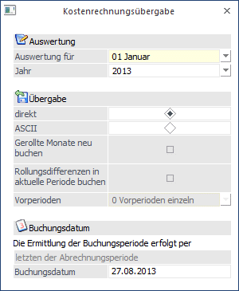

Im Menüpunkt
1 Abschluss
1 KORE Buchungen
können die Kostenrechnungsinformationen, die im Zuge der Lohnverrechnung erstellt wurden, in die Kostenrechnung übergeben werden. Die Übergabe kann jederzeit durchgeführt werden, da sich das Programm merkt, welche Daten bereits verarbeitet wurden.
Achtung:
Dieser Menüpunkt kann nicht aufgerufen werden, wenn in den Applikations-Parametern (WinLine START, Menüpunkt Parameter / Applikations-Parameter, Bereich LOHN-Parameter / Kore/Pfändungseinstellungen) die Option " Die Buchung der Kore erfolgt direkt in das Kore-Journal" eingestellt ist.

Eingabefelder
Ø Auswertung für Monat / Jahr
Aus den Auswahllistboxen kann das Monat und das Jahr gewählt werden, für das die KORE-Übergabe durchgeführt werden soll. Standardmäßig wird immer die aktuelle Abrechnungsperiode des aktuellen Abrechnungsjahres vorgeschlagen.
Ø Übergabe
Hier kann die Form der Übergabe bestimmt werden:
ü direkt
Mit dieser Option werden
die KORE-Daten direkt in das KORE-Journal geschrieben. Dabei wird der Mandant
verwendet, der im entsprechendem Betrieb als FIBU-Mandant hinterlegt ist.
ü ASCII
Mit dieser Option werden
die KORE-Daten in eine ASCII-Datei geschrieben. Diese Datei entspricht dem
Format, wie es die WinLine KORE für die Übernahme von ASCII-Daten benötigt. Die
so erzeugte Datei bekommt den Namen
Ø LOHN-KORE-Abrechnungsmoat-Abrechnungsjahr-Mandantennummer.ASC
Beispiel:
LOHN-KORE-08-2002-300M.ASC
steht für Abrechnungsmonat August 2002, Mandant 300M.
Ø Gerollte Monate neu buchen
Diese Option ist nur dann verfügbar, wenn Rollungen vorhanden sind und die Übergabe "direkt" erfolgt. Damit kann gesteuert werden, ob die gerollten Monate in der Kostenrechnung neu gebucht werden sollen oder nicht.
Ist die Checkbox "Gerollte Monate neu buchen" aktiviert, kann zusätzlich die Option
Ø Rollungsdifferenzen in aktuelle Periode buchen
angewählt werden. Bleibt die Checkbox deaktiviert, werden die Rollungsdifferenzen in den Monaten gebucht, in denen sie angefallen sind. Wird die Checkbox aktiviert, werden die Rollungsdifferenzen in die aktuelle Periode übernommen, wobei noch zusätzliche Optionen ausgewählt werden können:
ü 0 Vorperioden einzeln
Mit
dieser Option werden die Buchungen pro Rollungsperiode gebucht.
ü 1 Vorperioden kumuliert
Mit
dieser Option werden alle Rollungsperioden zusammengefasst und gebucht.
ü 2 Vorperioden und Periode
kumuliert
Mit dieser Option werden alle Rollungsperioden und die aktuelle
Abrechnungsperiode zusammengefasst. Diese Option erzeugt die wenigsten
Buchungen, damit ist aber die Nachvollziehbarkeit der Buchungen nicht mehr
gewährleistet.
Ø Buchungsdatum:
Hier kann das Datum eingegeben werden, mit dem die Kosten gebucht werden sollen. Dieses Datum wird sowohl bei der direkten Übergabe, als auch bei der Übergabe in ASCII-Format verwendet.
Das hier eingegebene Buchungsdatum wird pro Periode gemerkt. Werden gerollte Perioden nochmals gebucht, erfolgt die Buchung mit dem gespeicherten Datum.
Über das Buchungsdatum kann auch gesteuert werden, in welche Buchungsperiode die Kostenrechnungszeilen geschrieben werden sollen. Diese Einstellung erfolgt über die LOHN-Parameter (siehe auch WinLine START-Handbuch, Kapitel LOHN-Parameter). Standardmäßig wird die Buchungsperiode aber von der LOHN-Abrechnungsperiode bestimmt.
Ø Vorschau - Button
Aus der Auswahllistbox kann entschieden werden, wie die Vorschau aufgegeben werden soll, wobei hier zwischen "Vorschau Bildschirm" und "Vorschau Drucker" entschieden werden kann.
Dadurch wird die Vorschau der Kostenrechnungsübergabe geöffnet, wobei hier alle Buchungszeilen angezeigt werden, die aufgrund der vorgenommenen Einstellungen zur Verfügung stehen. Damit kann ggf. nochmals kontrolliert werden, welche Daten in die Kostenrechnung übergeben werden. Wurde die Kostenrechnungsübergabe bereits einmal durchgeführt, werden auch die Zeilen angezeigt, die bereits einmal gebucht wurden und die durch die neue Übergabe wieder gelöscht werden.
Durch Drücken der F5-Taste wird die Übergabe gemäß den Einstellungen durchgeführt, wobei nach Abschluss der Übergabe das Fenster automatisch geschlossen wird. Durch Drücken der ESC-Taste wird das Fenster geschlossen.